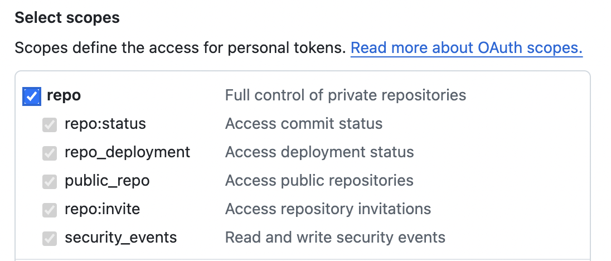

Insiders
Development of RaspAP is made possible thanks to a sponsorware release model. This means that new features are first exclusively released to sponsors as part of Insiders. Read on to learn what sponsorships achieve, how to become a sponsor and what's in it for you!
Paying it forward
We donate a percentage of all proceeds from Insiders to the Raspberry Pi Foundation each quarter, to help inspire future generations of makers together with their educators.
What is Insiders?
RaspAP Insiders is a private fork of RaspAP, hosted as a private GitHub repository. Almost all new features are developed as part of this fork, which means that they are immediately available to all eligible sponsors, as they are made collaborators of this repository.
Every feature is tied to a funding goal in monthly subscriptions. When a funding goal is hit, the features that are tied to it are merged back into the RaspAP public repo and released for general availability, making them available to all users. Bugfixes are always released in tandem.
Sponsorships start as low as $10 per month.
What sponsorships achieve
Sponsorships make this project sustainable, as they buy the maintainers of this project time a very scarce resource which is spent on the development of new features, bug fixes, stability improvement, issue triage and community support.
If you're unsure if you should sponsor this project, check out the list of completed funding goals to learn whether you're already using features that were developed with the help of sponsorships. You're most likely using at least a handful of them, thanks to our awesome sponsors!
What's in it for me?
The moment you become a sponsor, you'll get immediate access to the additional features below that you can start using right away, and which are currently exclusively available to sponsors:
Network device management
Firewall settings
WPA3-Personal AP security
802.11w Protected Management Frames
Printable Wi-Fi signs
MAC address cloning
Network diagnostics
WireGuard kill switch
Dynamic DNS
Multiple WireGuard configs
Wireless LAN routing
Custom user avatars
WiFi repeater mode
NTP Service
Limited privilege user role
Tailscale VPN support
Look for the list above to grow as we add more exclusive features. Be sure to visit this page from time to time to learn about what's new and follow @RaspAP on for the latest announcements.
Additional benefits
A tangible side benefit of sponsorship is that Insiders are able to help steer future development of RaspAP. This is done through Insiders' access to discussions, feature requests, issues and pull requests in the private GitHub repository. Insiders also have access a private channel on RaspAP's Discord server where they can chat one-on-one with the project's developers.
How to become a sponsor
Thanks for your interest in sponsoring! You can become a sponsor using your individual or organization's GitHub account. Just pick any tier from $10/month and complete the checkout. You will be automatically granted access to the private GitHub repository containing the Insiders edition, which has all exclusive features. In addition, you will be added as a team member with access to Insiders-only team discussions and content.
Info
If you're sponsoring RaspAP through a GitHub organization, please send a short email to sponsors@raspap.com with the name of your organization and the account that should be added as a collaborator.2
You can cancel your sponsorship anytime.3
Funding targets
Below is a list of funding targets. When a funding target is reached, the features that are tied to it are merged back into RaspAP and released to the public for general availability.
Goals
The following section lists all funding goals. Each goal contains a list of features prefixed with a checkmark symbol, denoting whether a feature is already available or planned, but not yet implemented. When the funding goal is hit, the features are released for general availability.
$1,000 - 2nd Insiders Edition
Firewall settings
WPA3-Personal AP security
802.11w Protected Management Frames
Printable Wi-Fi signs
Network diagnostics
Dynamic DNS
WireGuard kill switch
NTP Service
$1,500 - 3rd Insiders Edition
Network device management
Multiple WireGuard configs
MAC address cloning
Wireless LAN routing
Custom user avatars
WiFi repeater mode
Limited privilege user mode
Tailscale VPN support
$2,000 - 4th Insiders Edition
Wireshark plugin
Dual band AP mode
Completed goals
$500 - 1st Insiders Edition
Multiple OpenVPN client configs
OpenVPN certificate authentication
OpenVPN service logging
Night mode toggle
Restrict network to static clients
WireGuard support
Set AP transmit power
Transparency
We've chosen OpenCollective as the fiscal host for our GitHub sponsors organization. This means that our budget is completely transparent financial contributions, expenses and payouts to project team members are automatically reported. Everyone can see where money comes from and what it's spent on. This committent to full transparency was central in our decision to implement Insiders.
Quarterly giving
Beginning in 2022, each quarter 15% of all proceeds from Insiders will be donated directly to the Raspberry Pi Foundation. The Raspberry Pi Foundation is a UK-based charity that works to put the power of computing and digital making into the hands of people all over the world.
The Foundation supports initiatives like Coder Dojo, Astro Pi, Coolest Projects and much more.
When you become an Insider, not only do you support development of RaspAP but you also help inspire young people by harnessing the power of computing to solve problems and express themselves creatively.
Support for educators
We're big believers in the role that computing and digital technologies can play in shaping a better world. Many engineers, including members of the RaspAP team, got their first introduction to computing at an early age. This can take the form of a structured curriculum in a school setting, or less-formally through clubs, competitions and partnerships with youth organizations. Equally important is university, vocational and research training in digital technologies at all levels.
To this end, we have pledged to make Insiders freely available to all educators, their students, club participants and staff.
Criteria
Educators, teacher trainers, researchers and club organizers engaged in digital and computing technologies for students of all ages are eligible. The only requirement is a GitHub account and a domain email address associated with an educational institution or organization with a focus on digital learning. Send a mail to sponsors@raspap.com with your GitHub account details and we'll get you started with Insiders.
Repository access
To access Insiders, you will be invited to become a member of the RaspAP organization. GitHub will send an email with an invitation link to the address associated with your GitHub account. To join the organization, simply click the invitation link in the email.
Important
GitHub invitations automatically expire seven days after they are created. For this reason, be sure to accept the invite during this time frame.
You must accept this invite before performing an upgrade or new install, as described in the next sections.
Installing Insiders
RaspAP gives you two different ways to install the Insiders Edition. The simplest and recommended approach is to use a pre-built Insiders image. Alternatively, you can upgrade an existing installation or create a custom install by executing the Quick installer. Each method is described in the following sections.
Pre-built image
Custom Raspberry Pi OS Lite images with RaspAP's Insiders Edition preinstalled are available for direct download. This includes both 32- and 64-bit builds for ARM architectures.
Begin by downloading your desired image from the latest release page in the private Insiders repository. Next, use a utility such as the Raspberry Pi Imager or balenaEtcher to flash the OS image onto a microSD card. Insert the card into your device and boot it up. The RaspAP Insiders Edition with the most popular optional components will be active and ready for you to configure.
Quick install
The Quick installer gives you several options, or switches, to upgrade an existing installation to the Insiders Edition, or create a fresh Insiders install.
When using this method to install or upgrade to Insiders, GitHub will prompt you for your username and password to clone the private repository. You must enter a GitHub Personal access token at the password prompt. Details are provided in the Authentication section.
You can streamline GitHub authentication by passing your GitHub credentials to the installer with the --name and --token parameters:
curl -sL https://install.raspap.com | bash -s -- --upgrade --insiders --name [username] --token [my-token]
Your credentials are passed securely to GitHub. Whichever method you choose, it's recommended to verify access to the Insiders repo with your token beforehand.
Upgrading
To upgrade an existing RaspAP installation, invoke the Quick installer with the --upgrade switch, specifying the private Insiders option, like so:
New installation
To create a fresh installation of Insiders, invoke the Quick installer with the --insiders switch, like so:
Authentication
GitHub removed support for password authentication, so you will need to generate a Personal access token (classic) and use this in place of your password. The process of creating a token is straightforward and described here.
Important
Be sure to create a "classic" personal access token (not a fine-grained one) with the correct token scope. Failure to create the correct token type and scope will result in errors when cloning the private repository. Before invoking the Quick installer, it's recommended to verify your token first.
Token scopes
When creating a personal access token (classic), be sure to select the repo "Full control of private repositories" option under Select scopes, as shown below:

Failure to select this option will result in errors when cloning the private Insiders repository.
Verifying a token
If this is your first time using a GitHub personal access token, you can verify it by using curl and the GitHub API. Substitute your token value for MY_TOKEN below:
If successful, GitHub should reply with HTTP/2 200 and a x-oauth-scopes: repo value in the response. If you receive a HTTP 401 or other error from curl, check your token and try again.
Security and 2FA
Your token is sent securely via HTTPS authentication (encrypted) to GitHub. The installer has no knowledge of your token and does not store or cache it in any way.
Tip
When invoking the installer with the --token option, your token appears in your shell history. If someone gains access to your machine, they could potentially see the token. You can mitigate this by clearing the last command from your history with history -d $(history | tail -1 | awk '{print $1}').
If you're using GitHub with 2FA enabled the same process as above applies.
Exclusive plugins
Many Insiders features are available as plugins that you can install on-demand. To do so, select a desired plugin from the System > Plugins tab by choosing Details followed by Install now.
Scope of support
Individual sponsors may use the main RaspAP repository for non-bug related discussions, including troubleshooting. If you've found a bug with an Insiders feature, please review our issue policy and create a report in the Insiders repository.
The RaspAP team will prioritize issues and feature requests for sponsors at the Business tier. Please create a report in the Insiders repository or contact us via email to discuss your requirements.
Terms
We're using RaspAP for a commercial project. Can we use Insiders under the same terms and conditions?
Yes. Whether you're an individual or a company, you may use RaspAP Insiders precisely under the same terms as RaspAP, which are defined by the GNU GPL 3.0 license. However, we kindly ask you to respect the following guidelines:
- Please don't distribute the source code of Insiders. You may freely use it for public, private or commercial projects, fork it, mirror it, do whatever you want with it, but please don't release the source code, as it would counteract the sponsorware strategy.
- If you cancel your subscription, you're removed as a collaborator and will miss out on future updates of Insiders. However, you may use the latest version that's available to you as long as you like. Just remember that GitHub deletes private forks.
Discussions
Questions or comments about Insiders? Join the discussion here.
-
You may be wondering if the sponsorware model contradicts the ethos of Open Source software. It's true that some features are locked behind a payment, which means they are only accessible after pledging a small amount of money. However, these features are only exclusive until specific funding targets are reached. Making an Open Source project sustainable is exceptionally difficult. Maintainers invest significant time and energy developing software, testing, responding to issues, writing documentation and so on. Too often, this leads to burnout and abandoned projects. The sponsorware model ensures that if you decide to use RaspAP, you can be sure that the project remains healthy, bugs are fixed quickly and new features are added regularly.
-
It's currently not possible to grant access to each member of an organization, as GitHub only allows for adding users. Thus, after sponsoring, please send an email to sponsors@raspap.com, stating which account should become a collaborator of the Insiders repository. We're working on a solution which will make access to organizations much simpler.
-
If you cancel your sponsorship, GitHub schedules a cancellation request which will become effective at the end of the billing cycle, which ends at the 22nd of the month for monthly sponsorships. This means that even though you cancel your sponsorship, you will keep your access to Insiders as long as your cancellation isn't effective. All charges are processed by GitHub through Stripe. As we don't receive any information regarding your payment, and GitHub doesn't offer refunds, sponsorships are non-refundable.